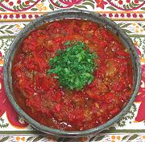

|
Pindjur - Relish / SpreadMacedonia - Pindjur | Serbia> - Pindzur | ||||
| Makes: Effort: Sched: DoAhead: |
3 cups *** 3 hrs Yes |
This condiment or spread, especially popular in Macedonia and Serbia, is similar to Ajvar, but Ajvar never includes eggplant. The name "Pindjur" is used in some regions for both Pindjur and Ajvar. | |||
|
2 1 1 4 tt 1/2 1/2 2 1/4 |
# # # cl T t T c |
Peppers (1) Eggplants Tomatoes (2) Garlic Red Chili, hot (1) Salt Sugar Vinegar (3) Oil (4) |
Pindjur is usually made in much larger quantity than this recipe, and exact proportions of the ingredients vary quite a bit (see Note-6). Prep - (1-1/4 hrs)
|